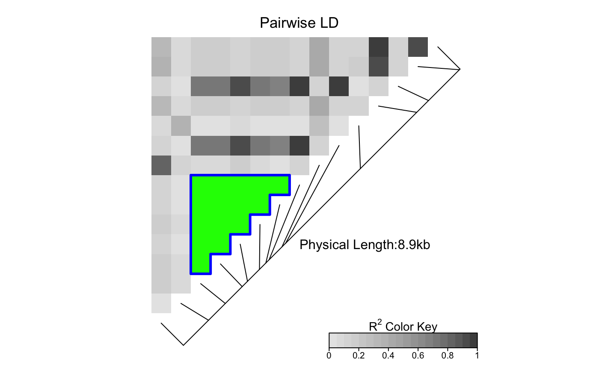

LDheatmap.highlight.RdThe function LDheatmap.highlight() is used to highlight a
specified genetic region in the linkage disequilibrium (LD)
heat map drawn with the LDheatmap() function.
LDheatmap.highlight(LDheatmap, i, j, fill = "NA", col = "black", lwd = 1, lty = 1,flipOutline=FALSE, crissCross = FALSE)
| LDheatmap | An object of class |
|---|---|
| i | A numeric value specifying the index of the first SNP to be in the highlighted region. |
| j | A numeric value specifying the index of the last SNP,
which must be different from |
| fill | Color to fill the highlighted area with. |
| col | A character string specifying the color of the line
segments defining the boundary of highlighted region; see
|
| lwd | A positive number specifying the width of the boundary segments. |
| lty | Either an integer or a character string specifying the
line type of the boundary segments; see |
| flipOutline | A Boolean variable that flips the outlined section over the diagonal of the heatmap. |
| crissCross | A Boolean variable that controls whether a contiguous selection of SNPs are outlined only on their polygonal boundary or at individual SNP levels. |
A data frame of the x and y coordinates of points defining the border of the highlighted area.
The function LDheatmap.highlight() highlights the cells representing
the pairwise LD for the SNPs located between i-th and j-th (inclusive)
SNPs in the genomic region of interest.
The order of indices has no effect on the plot. For example,
LDheatmap.highlight(LDheatmap, i=2, j=4) is the same as
LDheatmap.highlight(LDheatmap, i=4, j=2), which highlights
the cells representing the pairwise LD for the second,
third and fourth SNPs.
By default, LDheatmap.highlight() finds the viewport to draw on from
the LDheatmap object passed to it as an argument.
However, if LDheatmap() was called with the option pop=TRUE,
the resulting LDheatmap object is not assigned a
viewport. In this case, LDheatmap.highlight() assumes
the user wishes to highlight in the current viewport.
Therefore, if LDheatmap()
has been called with the option pop=TRUE,
the user must navigate to the correct viewport
before calling LDheatmap.highlight().
LDheatmap.highlight(tt, 3, 8, col="blue", fill="green", lwd=3, flipOutline=FALSE, crissCross=FALSE)